Información del Documento
En esta sección se registran los datos principales de la factura:
- Cliente: Seleccionar el tercero previamente creado. Es obligatorio que tenga identificación completa (CC o NIT).
- Prefactura: Permite cargar una prefactura previamente generada.
- Vendedor: Usuario responsable de la venta.
- Medios de Pago: Forma en que se recibe el dinero (efectivo, tarjeta, etc.).
- Forma de Pago: Define si es contado o crédito.
- Fecha: Fecha de emisión del documento.
- Caja: Caja desde donde se realiza la venta.
- Talonario: Define la numeración y tipo de documento electrónico.
Detalle de la Factura
En esta sección se agregan los productos o servicios que se desean facturar.
- Código o búsqueda del producto
- Cantidad
- Descuentos
- Impuestos
- Valor unitario
Los productos se agregan al listado mediante el botón "Agregar".
Diferencia con POS
A diferencia del POS electrónico, la factura electrónica requiere un cliente plenamente identificado y genera un documento con mayor validez tributaria.
En esta sección se podrá crear facturas diligenciando un formulario con los datos
correspondientes teniendo en cuenta la siguiente información en la imagen.
Seleccionar o crear Tercero (Cliente)
En esta sección el sistema permite registrar un nuevo tercero (cliente) directamente desde
el módulo de facturación POS, facilitando la creación rápida durante una venta.
Cuando el cliente no se encuentra registrado, el usuario puede utilizar la opción de creación desde el
campo de cliente.
El sistema desplegará un formulario donde se debe ingresar la información básica del tercero, como:
- Tipo y número de identificación.
- Tipo de persona
- Nombres y apellidos o razón social.
- Dirección.
- Teléfono.
- Correo electrónico.
Ingresamos el numero de documento y damos clic en el boton de Dian y ahi desplegará los datos.
Una vez completada la información, se guarda el registro y el cliente quedará disponible automáticamente
para ser seleccionado en la factura en curso.
Se puede seleccionar una prefactura
Para que funcione la prefactura tiene que estar a nombre del mismo cliente seleccionado.
Selección de Datos para la Facturación
Una vez creado o seleccionado el cliente, el usuario debe completar la información necesaria para continuar con el proceso de facturación.
En esta etapa se deben definir los siguientes campos:
- Caja: Selecciona la caja desde la cual se realiza la venta.
- Talonario: Define el consecutivo de facturación que se utilizará.
- Vendedor: Usuario responsable de la transacción.
- Medio de pago: Selecciona el tipo de pago (ejemplo: efectivo, tarjeta).
- Forma de pago: Indica si la venta es de contado o crédito.
Estos datos son obligatorios para garantizar que la factura se genere correctamente y quede registrada con la información completa.
Una vez diligenciados estos campos, el usuario puede continuar con el ingreso de los productos en la sección de detalle de la factura.
Ingreso de Productos a la Factura
Una vez completada la información del cliente y los datos de la venta, el usuario debe proceder a registrar los productos en la factura.
En la sección Detalle de la Factura, el sistema permite agregar productos mediante las siguientes opciones:
- Buscar Producto: Permite buscar un producto en el sistema.
- Ver Producto: Muestra el listado de productos disponibles.
- Ventas Recurrentes: Permite cargar productos previamente utilizados con frecuencia.
Una vez seleccionado el producto, se deben ingresar o validar los siguientes datos:
- Cantidad.
- Descuento (si aplica).
- Impuesto.
- Valor unitario.
El producto se agrega mediante el botón “Agregar” o utilizando la tecla rápida indicada en el sistema.
Los productos registrados se visualizarán en la tabla inferior, donde se mostrará el detalle de cada ítem junto con su valor total.
El sistema actualizará automáticamente el total de la factura a medida que se agregan los productos.
Listado de Documentos Electrónicos
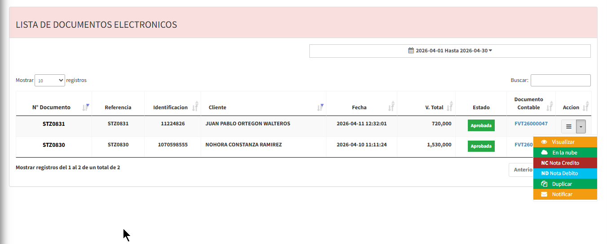
En este módulo se visualizan todas las facturas electrónicas generadas en el sistema.
Permite consultar, gestionar y realizar acciones sobre cada documento.
Filtros de Búsqueda
El usuario puede filtrar la información mediante:
- Rango de fechas: Permite consultar documentos en un periodo específico.
- Buscador: Para localizar rápidamente por número, cliente u otros datos.
Información del Listado
- N° Documento: Número del comprobante.
- Referencia: Código interno del documento.
- Identificación: Documento del cliente.
- Cliente: Nombre del tercero.
- Fecha: Fecha de emisión.
- Valor Total: Total de la factura.
- Estado: Indica si el documento ha sido enviado o está pendiente.
- Documento Contable: Permite contabilizar la factura.
Acciones del Documento
- Visualizar: Permite ver el detalle de la factura.
- En la nube: Consulta el documento electrónico almacenado.
- NC Nota Crédito: Genera una nota crédito asociada a la factura.
- ND Nota Débito: Genera una nota débito asociada.
- Duplicar: Permite crear una nueva factura basada en la actual.
- Notificar: Envía el documento al cliente (correo u otros medios).
Consideración
Las facturas en estado aprobado ya han sido validadas correctamente ante la DIAN.
Los documentos en estado "Sin Enviar" deben ser transmitidos a la DIAN para que tengan validez fiscal.
Aquí solo podremos visualizar factura a detalle, ademas hay dos botones, uno verde y uno rojo en el cual podremos.
Esos botones es para registrar algún ingreso de dinero o egreso de dinero de forma rápido sin necesidad de ir hasta el módulo de caja y realizar un movimiento de caja
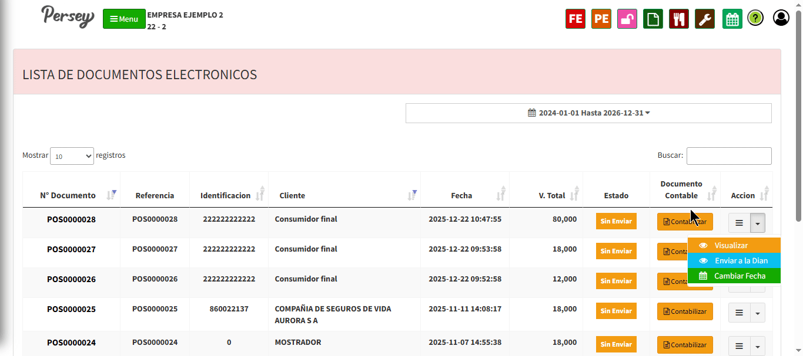
En esta opcion odremos ver en una nueva ventana el documento de la factura, el cual podremos acusar o reclamar , según sea el caso.
Acusar es la confirmación electrónica de que el comprador recibió la factura electrónica de su proveedor. Es un evento inicial que valida la entrega del documento.
Si hay inconsistencias, errores o no se recibieron los bienes/servicios correctamente, el comprador debe realizar un reclamo
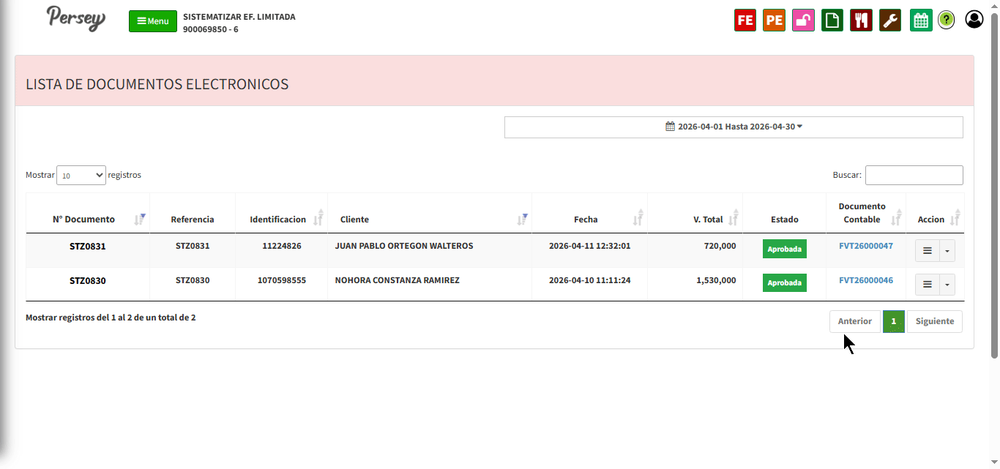
Aqui podremos cancelar un a factura que fue a credito, seleccionamos el motivo y guardamos. Se anulará la factura. O congelamos la factura
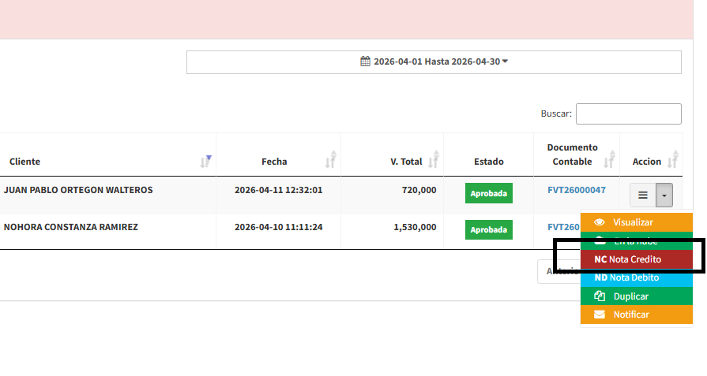
Aqui podremos Aumentar el valor de una factura, seleccionamos el motivo y guardamos. Se anulará la factura. O congelamos la factura
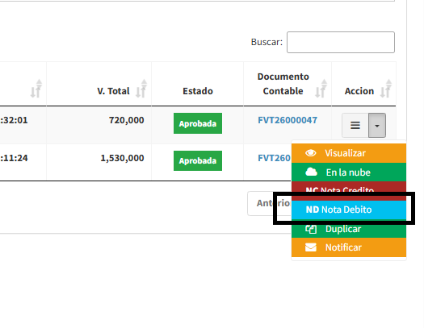
Notificar
La opción Notificar permite enviar la factura electrónica al cliente
mediante correo electrónico u otros medios.
- Seleccionar la factura en el listado.
- Hacer clic en Acciones → Notificar.
- El sistema envía el documento al cliente registrado.
Esta opción se utiliza para compartir la factura una vez ha sido generada y validada.
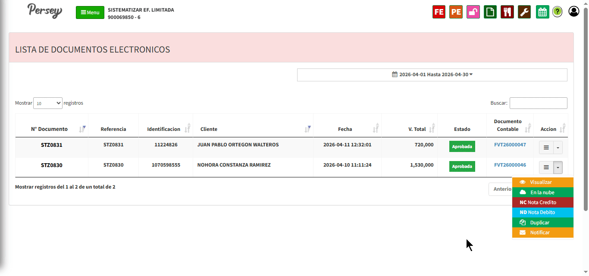
Para ver este reporte debe diligenciar el formulario , escoger el talonario, la fecha
desde-hasta y darle click en el boton que dice "VER". Tambien puede descargarlo en
PDF
dandole click en el boton que dice "PDF" o en excel.
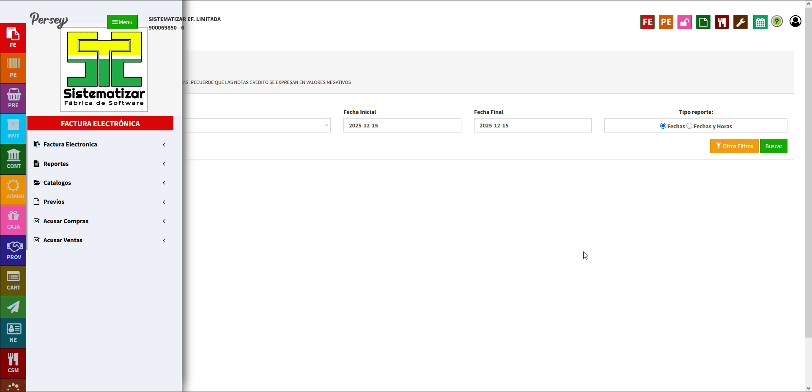
Para ver este reporte debe diligenciar el formulario , escoger el talonario, la fecha
desde-hasta y darle click en el boton que dice "VER". Tambien puede decargarlo en PDF
o
Excel dando click en el boton "PDF" o "Excel"
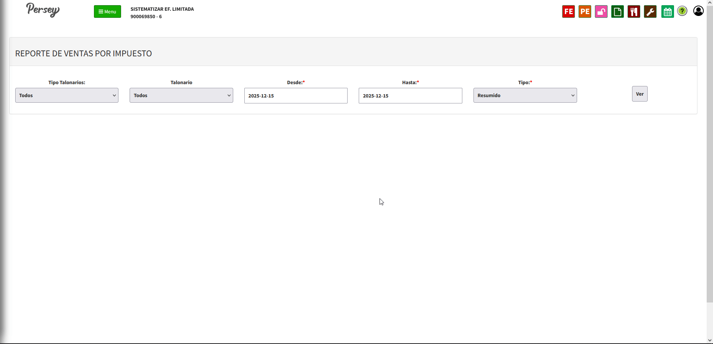
Para ver este reporte debe diligenciar el formulario, escoger el talonario, el grupo, la
fecha desde-hasta y darle click en el boton que dice "VER". Tambien puede descargarlo
en PDF dandole click en el boton que dice "PDF"
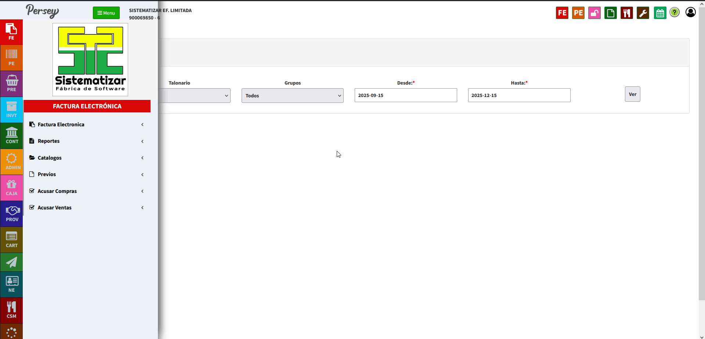
Para ver este reporte debe diligenciar el formulario , escoger el talonario, la fecha
desde-hasta y darle click en el boton que dice "VER". Tambien puede descargarlo en
PDF
dandole click en el boton que dice "PDF"
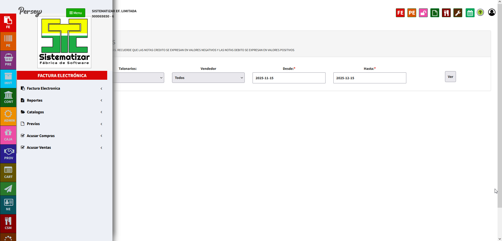
Para ver este reporte debe diligenciar el formulario , escoger el talonario, el articulo a buscar, la fecha
desde-hasta y si quiere un reporte detallado o resumiodo luego darle click en el boton correspondiente. Puede filtrar los reportes dependiendo si quiere por articulos, cliente y
fecha. Tambien puede descargarlo en PDF dandole click en el boton que dice "PDF"
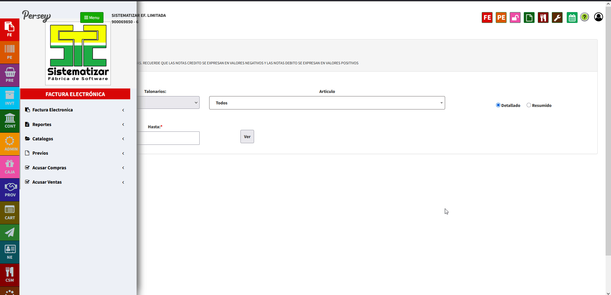
Para ver este reporte debe diligenciar el formulario , escoger tipo de nota , la fecha
desde-hasta y luego darle click en el boton que dice "VER". Tambien puede descargar
el
reporte en PDF dando click en el boton "PDF"

Para ver este reporte debe diligenciar el formulario , escoger el talonario, clientes, la
fecha desde-hasta y darle click en el boton que dice "VER". Tambien puede descargarlo
en PDF dandole click en el boton que dice "PDF"
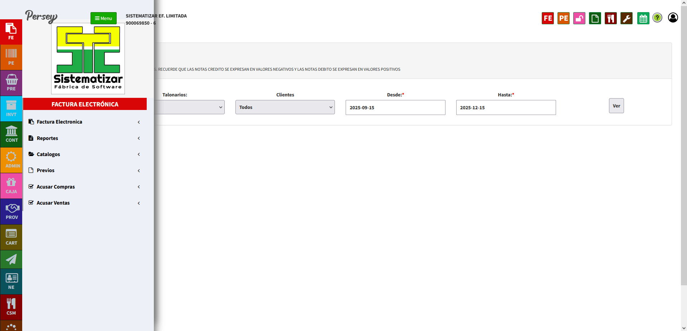
Para ver este reporte debe diligenciar el formulario , escoger el talonario, el vendedor, la
fecha desde-hasta y si quiere un reporte detallado o resumiodo luego darle click en el boton
que dice "VER". Tambien puede descargarlo en PDF dandole click en el boton que dice
"PDF"
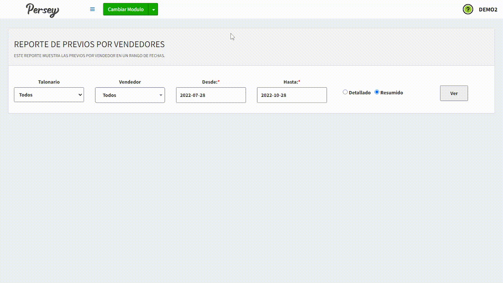
Para ver este reporte debe diligenciar el formulario , escoger el talonario, el articulo, la
fecha desde-hasta y si quiere un reporte detallado o resumiodo luego darle click en el boton
que dice "VER". Tambien puede descargarlo en PDF dandole click en el boton que dice
"PDF"
Para ver el reporte diario, solo debe seleccionar el talonario, los rangos de fechas y el tipo. Hecho esto se generará el informe en pdf
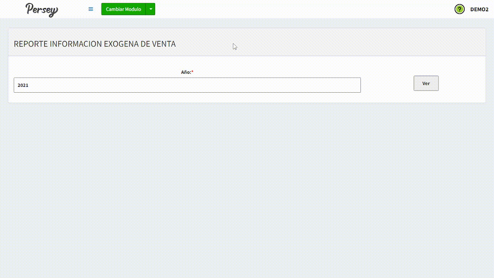
Para ver el reporte de información exogena de venta solo debe seleccionar el año y darle
click en el boton que dice "VER", Tambien puede descargarlo en formato Excel dandole
click en el boton Excel
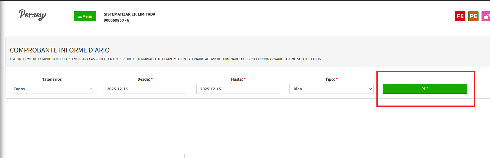
Para ver el reporte de los precios tendremos que seleccionar el o los grupos que encesitemos, y su precio de venta.
Podemos quitar columnas(por defecto son Grupo, Nombre Largo, Referencia y precio venta )

Aca veremos un reporte detallo sobre las comisiones de ventas hechos por los empleados, escogemos el vendedor o vendedores, el rengo de fecha y el tipo de reporte:
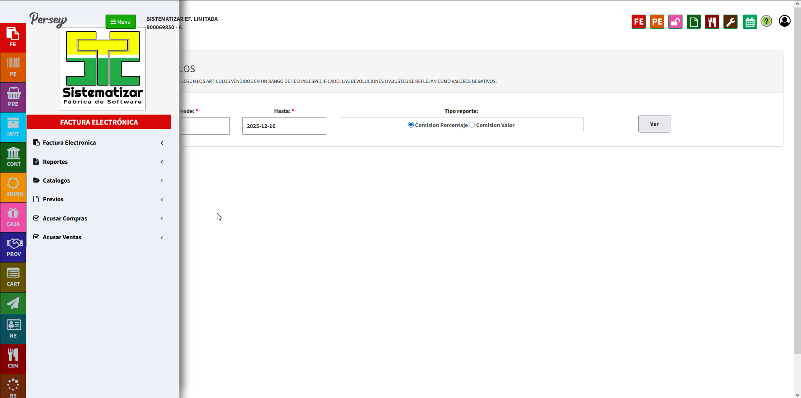
Creación de Terceros (Clientes)
En este módulo se registran los clientes que serán utilizados en la facturación POS electrónica.
Para crear un nuevo tercero, se debe hacer clic en el botón "Nuevo" y completar la información solicitada.
Tipo de Persona
Uno de los campos más importantes es el Tipo de Persona, ya que define cómo se diligencia la información del cliente:
Persona Natural

- Corresponde a una persona individual.
- Se identifica con cédula de ciudadanía.
- Se deben diligenciar nombres y apellidos.
Campos principales:
- Tipo de identificación
- CC/NIT
- Primer nombre y segundo nombre
- Primer apellido y segundo apellido
- Nombre comercial (opcional)
Persona Jurídica

- Corresponde a empresas o entidades.
- Se identifica con NIT.
- No requiere nombres y apellidos, sino razón social.
Campos principales:
- NIT
- Dígito de verificación (DV)
- Razón social
- Nombre comercial
Resumen
- Persona Natural: Cliente individual (ej: Juan Pérez)
- Persona Jurídica: Empresa (ej: Seguros Sura)
Recomendación
Seleccionar correctamente el tipo de persona garantiza que la facturación electrónica cumpla con los requisitos de la DIAN.
Documento Previo - Compras
Este módulo permite la creación de documentos previos como órdenes de compra, órdenes de servicio o pedidos a proveedores.
Información del Documento
- Cliente/Proveedor: Seleccionar el tercero asociado.
- Vendedor: Usuario responsable del registro.
- Fecha: Fecha del documento.
- Talonario: Define la numeración del documento.
Detalle del Documento
- Agregar productos o servicios.
- Indicar cantidad, precio e impuestos (IVA).
- Aplicar descuentos si es necesario.
Los ítems se agregan mediante el botón "Agregar" y quedan registrados en el listado inferior.
Aqui le apareceran todos los previos o prefacturas que haya generado
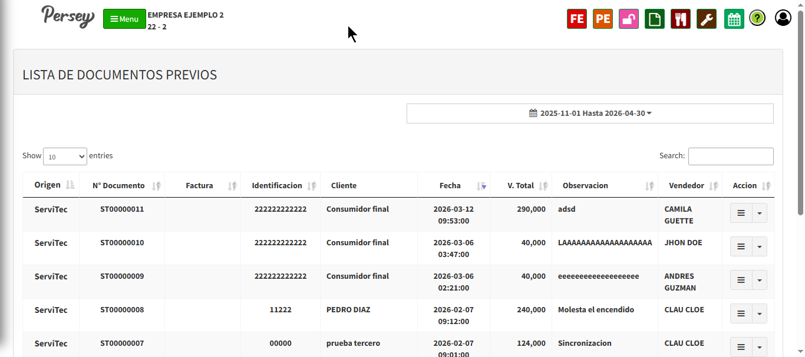
Acuse de Ventas
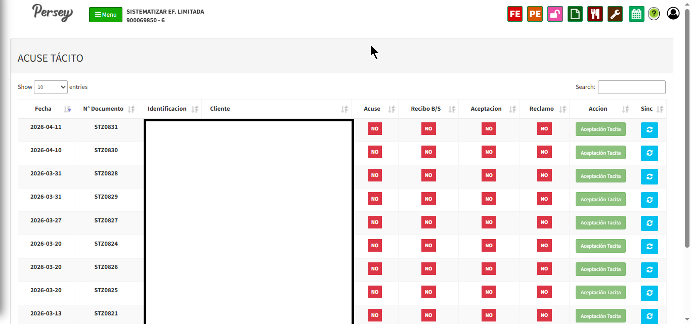
Este módulo permite gestionar el acuse de recibo, aceptación o reclamo de las facturas electrónicas emitidas.
Listado
Se muestra un listado de documentos con la siguiente información:
- Fecha: Fecha de la factura.
- N° Documento: Número del comprobante.
- Identificación: Documento del cliente.
- Cliente: Nombre o razón social.
- Acuse: Indica si se ha realizado el acuse de recibo.
- Recibo B/S: Confirmación de recibo de bienes o servicios.
- Aceptación: Estado de aceptación de la factura.
- Reclamo: Indica si existe algún reclamo.
Acciones
- Aceptación Tácita: Permite aceptar automáticamente la factura cuando no hay respuesta del cliente.
- Actualizar: Refresca el estado del documento.
La aceptación tácita se aplica cuando el cliente no realiza ninguna acción dentro del tiempo establecido.